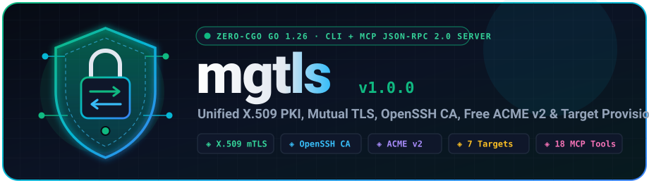

╭──────────────────────────────────────────────────────────────────────────╮ │ ▄▄▄▄███▄▄▄▄ ▄██████▄ ███ ▄█ ▄████████ │ │ ▄██▀▀▀███▀▀▀██▄ ███ ███ ▀█████████▄ ███ ███ ███ │ │ ╭───╮ ███ ███ ███ ███ █▀ ▀███▀▀██ ███ ███ █▀ │ │ ╭┴───┴╮ ███ ███ ███ ▄███ ███ ▀ ███ ███ │ │ │ ◈⇄◈ │ ███ ███ ███ ▀▀███ ████▄ ███ ███ ▀███████████ │ │ ╰┬───┬╯ ███ ███ ███ ███ ███ ███ ███ ███ │ │ ╰───╯ ███ ███ ███ ███ ███ ███ ███▌ ▄ ▄█ ███ │ │ ╲ ╱ ▀█ ███ █▀ ████████▀ ▄████▀ █████▄▄██ ▄████████ │ │ ▼ ▀ │ ├──────────────────────────────────────────────────────────────────────────┤ │ X.509 Root/Int CA · Mutual TLS · OpenSSH CA · RFC 8555 ACME · MCP 2.0 │ ╰──────────────────────────────────────────────────────────────────────────╯
Zero-CGO, single-binary Go 1.26 cryptographic authority & Model Context Protocol (MCP) server. Provision multi-tier X.509 Root & Intermediate CAs, Mutual TLS (mTLS) certificates, OpenSSH User & Host CAs, free public Let's Encrypt / ZeroSSL / Buypass / Google Trust ACME certificates, and ready-to-run mTLS bundles for FastAPI, Spring Boot 3, MCP, NGINX, Vite, Proxmox VE, and OpenSSH.
Why mgtls Exists
Eliminate cryptic openssl, ssh-keygen, and certbot shell pipelines. Turn zero-trust TLS, Mutual TLS (mTLS), and OpenSSH CA onboarding into a single deterministic operation for humans, CI/CD, and AI agents.
Instead of juggling raw openssl commands, custom SAN .cnf files, Java PKCS#12 conversions, ssh-keygen -s flags, and separate ACME clients, mgtls manages local Root/Intermediate CAs, self-signed certs, Server/Client mTLS certs, OpenSSH User/Host CAs, and Let's Encrypt / ZeroSSL / Buypass / Google ACME in one binary.
Generating .pem files is only half the battle. mgtls target generate outputs drop-in, production-ready TLS 1.3 and strict mTLS configurations, server/client code templates, and verification scripts for Python FastAPI, Spring Boot 3, MCP Servers, NGINX, Vite, Proxmox VE, and OpenSSH.
Use mgtls interactively from the CLI, declaratively reconcile entire fleets in Terraform/Ansible/CI-CD via mgtls apply -f mgtls.yaml, or expose all 18 cryptographic tools to AI agents (Claude, Cursor, Antigravity) via mgtls mcp serve over stdio or mTLS HTTPS.
Legend: ████ 100% (Full Native) ▓▓░░ 50% (Partial / Plugin / Server-Only) ░░░░ 0% (Not Supported) ╔════════════════════════════════╦════════════╦════════════╦════════════╦════════════╦════════════╦════════════╗ ║ ║ X.509 ║ OpenSSH ║ Public ║ App/Server ║Declarative ║ Native ║ ║ OPEN-SOURCE TOOL ║ Multi-Tier ║ User/Host ║ ACME v2 ║ mTLS ║YAML Fleet ║ MCP Server ║ ║ ║ PKI & mTLS ║ CA ║ Client ║Scaffolding ║ (GitOps) ║ (AI Agent) ║ ╠════════════════════════════════╬════════════╬════════════╬════════════╬════════════╬════════════╬════════════╣ ║ mgtls (Go 1.26, 0-CGO) ║ ████ 100% ║ ████ 100% ║ ████ 100% ║ ████ 100% ║ ████ 100% ║ ████ 100% ║ ╟────────────────────────────────╫────────────╫────────────╫────────────╫────────────╫────────────╫────────────╢ ║ Smallstep (step-cli / step-ca)║ ████ 100% ║ ████ 100% ║ ████ 100% ║ ░░░░ 0% ║ ░░░░ 0% ║ ░░░░ 0% ║ ╟────────────────────────────────╫────────────╫────────────╫────────────╫────────────╫────────────╫────────────╢ ║ HashiCorp Vault / OpenBao ║ ████ 100% ║ ████ 100% ║ ▓▓░░ 50% ║ ░░░░ 0% ║ ▓▓░░ 50% ║ ▓▓░░ 50% ║ ╟────────────────────────────────╫────────────╫────────────╫────────────╫────────────╫────────────╫────────────╢ ║ Cloudflare cfssl ║ ████ 100% ║ ░░░░ 0% ║ ░░░░ 0% ║ ░░░░ 0% ║ ▓▓░░ 50% ║ ░░░░ 0% ║ ╟────────────────────────────────╫────────────╫────────────╫────────────╫────────────╫────────────╫────────────╢ ║ Square certstrap ║ ████ 100% ║ ░░░░ 0% ║ ░░░░ 0% ║ ░░░░ 0% ║ ░░░░ 0% ║ ░░░░ 0% ║ ╟────────────────────────────────╫────────────╫────────────╫────────────╫────────────╫────────────╫────────────╢ ║ OpenVPN easy-rsa ║ ████ 100% ║ ░░░░ 0% ║ ░░░░ 0% ║ ░░░░ 0% ║ ░░░░ 0% ║ ░░░░ 0% ║ ╟────────────────────────────────╫────────────╫────────────╫────────────╫────────────╫────────────╫────────────╢ ║ FiloSottile mkcert ║ ▓▓░░ 50% ║ ░░░░ 0% ║ ░░░░ 0% ║ ░░░░ 0% ║ ░░░░ 0% ║ ░░░░ 0% ║ ╟────────────────────────────────╫────────────╫────────────╫────────────╫────────────╫────────────╫────────────╢ ║ lego / certbot / acme.sh ║ ░░░░ 0% ║ ░░░░ 0% ║ ████ 100% ║ ▓▓░░ 50% ║ ░░░░ 0% ║ ░░░░ 0% ║ ╚════════════════════════════════╩════════════╩════════════╩════════════╩════════════╩════════════╩════════════╝ Overall Ecosystem Coverage Score (out of 6 Core Dimensions): ────────────────────────────────────────────────────────────────────────────── mgtls ████████████████████████████████████ 6.0 / 6.0 (100%) HashiCorp Vault / OpenBao █████████████████████░░░░░░░░░░░░░░░ 3.5 / 6.0 (58%) Smallstep (step-cli/ca) ██████████████████░░░░░░░░░░░░░░░░░░ 3.0 / 6.0 (50%) Cloudflare cfssl █████████░░░░░░░░░░░░░░░░░░░░░░░░░░░ 1.5 / 6.0 (25%) lego / certbot / acme.sh █████████░░░░░░░░░░░░░░░░░░░░░░░░░░░ 1.5 / 6.0 (25%) Square certstrap ██████░░░░░░░░░░░░░░░░░░░░░░░░░░░░░░ 1.0 / 6.0 (17%) OpenVPN easy-rsa ██████░░░░░░░░░░░░░░░░░░░░░░░░░░░░░░ 1.0 / 6.0 (17%) FiloSottile mkcert ███░░░░░░░░░░░░░░░░░░░░░░░░░░░░░░░░░ 0.5 / 6.0 (8%)
Three Ways to Orchestrate Cryptography
Use the imperative CLI, apply a declarative mgtls.yaml fleet manifest, or expose mgtls mcp serve to AI agents over stdio or Mutual TLS HTTPS.
# Build static zero-CGO binary from ./src/cmd/mgtls CGO_ENABLED=0 go build -trimpath -ldflags="-s -w" -o bin/mgtls ./src/cmd/mgtls # Initialize atomic .mgtls workspace (0700 dirs, 0600 private keys) ./bin/mgtls init # Create Root CA (Ed25519) and Intermediate CA (ECDSA P-256) ./bin/mgtls ca create --name corp-root-ca --cn "Acme Corp Root CA" --algo ed25519 --days 3650 ./bin/mgtls ca create --name corp-intermediate-ca --parent corp-root-ca --cn "Acme Corp Intermediate CA" --algo ecdsa-p256 --days 1825 # Issue Server & Client mTLS leaf certificates (with DNS, IP, and SPIFFE URI SANs) ./bin/mgtls cert issue --name api-srv --ca corp-intermediate-ca --cn localhost --role server --dns "localhost,api.internal" --ip "127.0.0.1" ./bin/mgtls cert issue --name api-client --ca corp-intermediate-ca --cn billing-worker --role client --uri "spiffe://corp.internal/sa/billing" # Verify full chain + EKU role + SANs, then generate a drop-in FastAPI mTLS bundle ./bin/mgtls cert verify --cert .mgtls/certs/api-srv/cert.pem --ca .mgtls/certs/api-srv/ca-chain.pem --dns localhost --role server ./bin/mgtls target generate --type fastapi --name fastapi-orders --ca corp-intermediate-ca --server-cert api-srv --client-cert api-client --mtls --out ./out-fastapi
# Reconcile an entire multi-tier X.509 PKI, OpenSSH CA fleet, and all 7 framework targets idempotently: ./bin/mgtls --store-dir .mgtls-fleet apply -f examples/fleet/mgtls.yaml # Inspect cryptographic inventory (CAs, leaf certs, SSH CAs, ACME orders, target bundles) ./bin/mgtls --store-dir .mgtls-fleet status # Run automated health, expiration, CRL revocation, and 0600 key-permission audit ./bin/mgtls --store-dir .mgtls-fleet doctor --warn-days 30
# 1. Run MCP JSON-RPC 2.0 Server over stdio (Claude Desktop, Cursor, Windsurf, Cline) ./bin/mgtls --store-dir .mgtls mcp serve --transport stdio # 2. Run MCP Server over HTTPS with strict Mutual TLS (RequireAndVerifyClientCert) ./bin/mgtls --store-dir .mgtls mcp serve \ --transport http \ --addr 127.0.0.1:8444 \ --tls-cert .mgtls/certs/api-srv/fullchain.pem \ --tls-key .mgtls/certs/api-srv/key.pem \ --client-ca .mgtls/certs/api-srv/ca-chain.pem
# 1. Create dedicated OpenSSH User CA and Host CA mgtls ssh ca-create --name corp-ssh-user-ca --type user --algo ed25519 mgtls ssh ca-create --name corp-ssh-host-ca --type host --algo ed25519 # 2. Sign a User Certificate (30-day validity, principals: alice,admin,sre) mgtls ssh sign --name alice-ssh --ca corp-ssh-user-ca --type user \ --key-id "alice@corp.internal" --principals "alice,admin,sre" --hours 720 # 3. Sign a Host Certificate (1-year validity, principals: bastion.corp.internal,10.0.0.10) mgtls ssh sign --name bastion-host-ssh --ca corp-ssh-host-ca --type host \ --key-id "bastion.corp.internal" --principals "bastion.corp.internal,10.0.0.10" --hours 8760 # 4. Generate complete sshd_config, ssh_config, authorized_principals & @cert-authority known_hosts mgtls ssh config-bundle --name corp-ssh-fleet \ --user-ca corp-ssh-user-ca --host-ca corp-ssh-host-ca \ --user-cert alice-ssh --host-cert bastion-host-ssh \ --hosts "*.corp.internal,10.0.0.*" --principals "alice,admin,sre" \ --out ./openssh-fleet-bundle
Layered Zero-CGO Cryptographic Engine
Every CLI flag and MCP tool call routes through the same deterministic Go packages backed by an atomic .mgtls workspace enforcing 0600 private key permissions.
◈ 1. Unified Entrypoints (src/cmd/mgtls)
Single static binary (src/cmd/mgtls) exposing both human-friendly CLI subcommands and a compliant MCP 2024-11-05 JSON-RPC 2.0 server.
◈ 2. X.509 PKI & mTLS (src/pkg/pki)
Multi-tier Root CAs (MaxPathLen: 2) & Intermediate CAs (MaxPathLen: 1), Server/Client/mTLS EKU profiles, SANs (DNS, IP, Email, SPIFFE URI), PKCS#12, and RFC 5280 CRLs.
◈ 3. OpenSSH CA (src/pkg/sshca)
Eliminates TOFU warnings and static authorized_keys sprawl using SSH_CERT_TYPE_USER and SSH_CERT_TYPE_HOST certificates with principal enforcement.
◈ 4. RFC 8555 ACME v2 (src/pkg/acme)
Pure-Go ACME v2 client with JWS ES256 request signing, External Account Binding (EAB HMAC-SHA256), 3 challenge solvers, and an in-memory mock ACME server.
7 Production-Ready Framework & Server Scaffolds
Run mgtls target generate --type <target> or call the target_generate MCP tool to emit complete server configs, client harnesses, and verification scripts.
Generates a FastAPI server with Uvicorn ssl_cert_reqs=ssl.CERT_REQUIRED, ASGI peer certificate attribute extraction, and an httpx mTLS client.
- app.py & run_server.sh
- client_mtls.py (httpx.Client SSLContext)
- verify_mtls.sh
Native Spring Boot 3.2+ PEM SSL bundles (client-auth: need) plus PKCS#12 keystores, Spring Security X.509 CN filter, and RestClient mTLS bean.
- application-tls.yml
- MtlsSecurityConfig.java
- MtlsRestClientConfig.java & verify_mtls.sh
Secures remote Model Context Protocol servers with mutual TLS across TypeScript/Node.js, Python, and NGINX sidecar reverse proxies plus Claude/Cursor configs.
- mcp_server_mtls.ts & mcp_server_mtls.py
- mcp_client_config.json
- nginx_mcp_sidecar.conf & verify_mcp_mtls.sh
Hardened NGINX TLS 1.2/1.3 reverse proxy enforcing ssl_verify_client on, optional CRL checking, and upstream X-SSL-Client-S-DN headers.
- nginx-mtls.conf
- verify_nginx_mtls.sh
TypeScript vite.config.mtls.ts configuring node:https with requestCert: true, peer certificate inspection middleware, and a Node https.Agent client.
- vite.config.mtls.ts
- client_fetch_mtls.mjs
Automated certificate deployment for Proxmox VE nodes via pvenode cert set or direct /etc/pve/local/pveproxy-ssl.pem installation and service reload.
- deploy_proxmox_cert.sh
- proxmox_pveproxy_verify.sh
- README-proxmox.md
Drop-in sshd_config.d/mgtls-ca.conf (TrustedUserCAKeys, HostCertificate), client @cert-authority known_hosts, and authorized_principals.
- sshd_ca.conf & ssh_client_ca.conf
- known_hosts_cert_authority & authorized_principals
- deploy_ssh_ca.sh
Built-In Free Public ACME v2 Certificate Authorities
Obtain publicly trusted certificates with mgtls acme obtain --provider <id> using HTTP-01, TLS-ALPN-01, or DNS-01 challenges.
| Provider ID | Certificate Authority | RFC 8555 Directory URL | EAB Required | Supported Challenges |
|---|---|---|---|---|
letsencrypt |
Let's Encrypt (Production) | https://acme-v02.api.letsencrypt.org/directory |
No | http-01, tls-alpn-01, dns-01 |
letsencrypt-staging |
Let's Encrypt (Staging) | https://acme-staging-v02.api.letsencrypt.org/directory |
No | http-01, tls-alpn-01, dns-01 |
zerossl |
ZeroSSL (90-Day Free DV) | https://acme.zerossl.com/v2/DV90 |
Yes (--eab-kid, --eab-hmac-key) |
http-01, dns-01 |
buypass |
Buypass Go SSL (180-Day Free DV) | https://api.buypass.com/acme/directory |
No | http-01, dns-01 |
google |
Google Trust Services | https://dv.acme-v02.api.pki.goog/directory |
Yes (--eab-kid, --eab-hmac-key) |
http-01, tls-alpn-01, dns-01 |
custom |
Custom RFC 8555 CA (Step-CA / Pebble) | Custom --directory-url |
Optional | http-01, tls-alpn-01, dns-01 |
18 MCP Tools · 3 Resources · 3 Guided Prompts
Connect Claude Desktop, Cursor, Windsurf, or custom AI agents to mgtls mcp serve over stdio or Mutual TLS HTTPS.
| MCP Tool Name | Subsystem | Description |
|---|---|---|
pki_create_ca | X.509 PKI | Create an X.509 Root CA or Intermediate CA (signed by parent_ca) in the store |
pki_issue_cert | X.509 PKI | Issue an X.509 Server, Client, or dual mTLS leaf certificate with DNS/IP/URI SANs and PKCS#12 bundle |
pki_self_sign | X.509 PKI | Issue a standalone self-signed X.509 certificate (Server, Client, or mTLS) |
pki_inspect | X.509 PKI | Parse and inspect an X.509 certificate file or named store certificate (SHA-256 fingerprint, SANs, EKUs) |
pki_verify | X.509 PKI | Verify X.509 certificate chain, Extended Key Usage role, SAN hostname/IP, and CRL revocation status |
pki_revoke | X.509 PKI | Revoke an issued certificate in the store and regenerate the CA's signed X.509 v2 CRL |
pki_trust_script | X.509 PKI | Generate OS trust store installation scripts (Debian/Ubuntu, RHEL/Fedora, Arch, macOS, Windows) |
ssh_create_ca | OpenSSH CA | Create an OpenSSH User CA or Host CA keypair (Ed25519, ECDSA P-256, RSA-4096) |
ssh_sign_cert | OpenSSH CA | Sign an OpenSSH User or Host certificate (*-cert.pub) with principals and validity window |
ssh_inspect | OpenSSH CA | Parse and inspect an OpenSSH certificate file (*-cert.pub) |
ssh_config_bundle | OpenSSH CA | Generate sshd_config drop-in, ssh_config drop-in, @cert-authority known_hosts, and authorized_principals |
acme_providers | ACME v2 | List supported free public ACME v2 CAs (Let's Encrypt, ZeroSSL, Buypass, Google Trust Services) |
acme_obtain | ACME v2 | Obtain a signed TLS certificate from an ACME v2 CA using HTTP-01, TLS-ALPN-01, or DNS-01 |
target_list | Targets | List all 7 supported framework & server target integrations and default ports |
target_generate | Targets | Generate ready-to-run TLS/mTLS or SSH CA bundles for FastAPI, Spring Boot, MCP, NGINX, Vite, Proxmox, or OpenSSH |
profile_apply | Fleet Engine | Apply a declarative YAML or JSON fleet manifest (mgtls.yaml) from file path or inline string |
store_status | Workspace | Return the full cryptographic workspace manifest inventory |
store_doctor | Workspace | Audit the store for expiring/expired certificates, revocations, missing files, and 0600 key permissions |
5 Runnable Cookbook Scripts + Terraform, Ansible, K8s & CI/CD
Execute end-to-end cryptographic workflows in isolated workspaces or integrate directly into Terraform/OpenTofu, Ansible, Kubernetes, Docker Compose, GitHub Actions, and GitLab CI.
Provisions an Offline Root CA, Issuing Intermediate CA, Server/Client mTLS leaf certs with SPIFFE SANs, and emits FastAPI, Spring Boot, NGINX & Vite bundles.
- ./cookbooks/01-local-pki-and-mtls-mesh.sh
Streams live MCP JSON-RPC 2.0 tool calls (pki_create_ca, pki_issue_cert, target_generate) to mgtls mcp serve.
- ./cookbooks/02-mcp-agent-zero-trust-mtls.sh
Creates dedicated OpenSSH User & Host CAs, signs 24h on-call SRE and bastion certificates, and builds @cert-authority fleet bundles.
- ./cookbooks/03-openssh-zero-trust-ca-fleet.sh
Queries all 5 free public ACME v2 CAs, issues a 397-day Proxmox VE node certificate, and generates pvenode cert set deployment scripts.
- ./cookbooks/04-proxmox-and-acme-automation.sh
Reconciles mgtls.yaml, exports Kubernetes kubernetes.io/tls Secrets (tls.crt, tls.key, ca.crt), and runs mgtls doctor.
- ./cookbooks/05-iac-and-cicd-integration.sh
Ready-to-run Terraform/OpenTofu external bridge, Ansible fleet playbook, Docker Compose mTLS stack, and GitHub Actions / GitLab CI templates.
- cookbooks/iac-cicd/terraform/main.tf
- cookbooks/iac-cicd/ansible/site.yml
- cookbooks/cicd/github-actions-mgtls.yml
Comprehensive Engineering Guides
Explore architecture specifications, cryptographic profiles, and runnable example harnesses directly in the repository.
Layered architecture, component interaction diagrams, security model, and atomic .mgtls workspace layout.
X.509 v3 profile matrices, key usages, OpenSSH certificate wire format, and RFC 8555 ACME v2 state machine.
Complete specification of all 18 MCP tools, 3 resources, 3 guided prompts, and stdio / mTLS HTTPS transports.
Step-by-step CLI tutorials, Root/Intermediate CA lifecycles, CRL revocation, and declarative mgtls.yaml manifests.
Production rollout guide for OpenSSH User/Host CAs and Let's Encrypt, ZeroSSL, Buypass, and Google Trust ACME automation.
Deep-dive configuration guides for FastAPI, Spring Boot 3, MCP Server, NGINX, Vite, Proxmox VE, and OpenSSH.
End-to-end executable cookbook workflows (cookbooks/*.sh) with Mermaid architectural diagrams.
Integrate mgtls with Terraform/OpenTofu, Ansible, Kubernetes Secrets, Docker Compose, GitHub Actions, and GitLab CI.